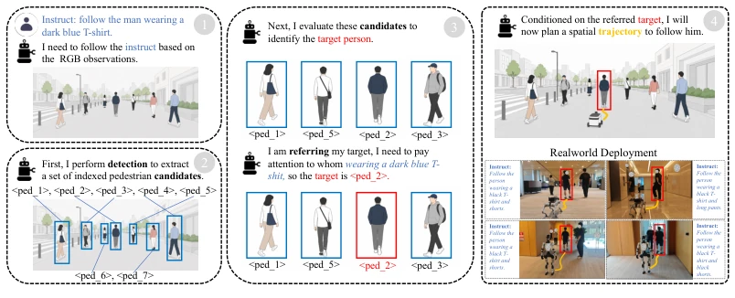
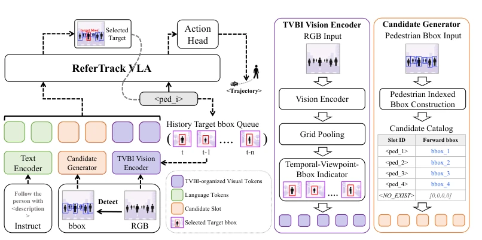
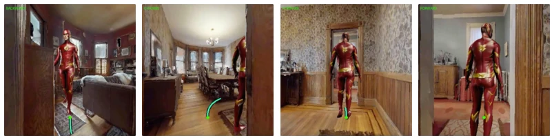
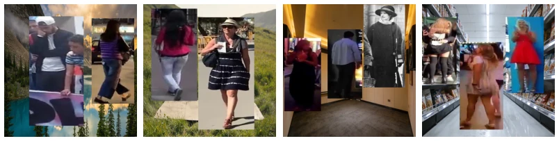
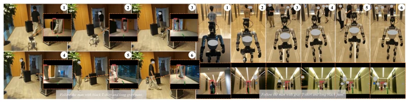
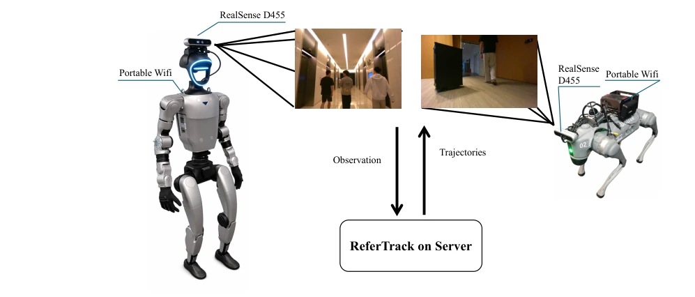

This paper prescribes a 'call name then act' protocol for Embodied Visual Tracking (EVT), bearing a certain sense of 'less is more'. Previous VLA models [1, 2] tend to mix recognition and planning within abstract space to perform CoT, resulting in difficult supervision, poor alignment, and reasoning processes resembling a black box. ReferTrack directly transforms target recognition into 'selecting an index', picking one from detection boxes, then planning a path. This approach is straightforward yet effective, pulling reasoning back into image space and utilizing discrete tokens to achieve explicit grounding. However, this relies heavily on the stability of the front-end detector; if YOLO misses detection, subsequent CoT strength is useless. Single camera beating multi-camera baseline is indeed impressive, but essentially uses a smarter 'selection mechanism' to compensate for field of view limitations, belonging to clever force rather than brute force, suitable for compute-sensitive scenarios, but also exposes the shortcoming of strong dependency on detectors.
Embodied Visual Tracking requires robots to follow targets described by natural language relying solely on onboard vision, which is crucial in crowded dynamic environments. Existing VLA methods [1, 2] unify recognition and planning, but their CoT reasoning is often based on latent variables in abstract space, difficult to supervise and weakly aligned with image detection, leading to getting lost in complex scenes. TrackVLA [1] and TrackVLA++ [2] introduced spatial awareness, but pure abstract reasoning still has bottlenecks. Furthermore, early methods [4] decoupled perception and control, causing errors to accumulate. Therefore, there is an urgent need for a paradigm capable of explicit grounding, transforming recognition into a discrete selection problem in image space, to leverage large-scale grounding data [17] for supervision, rather than relying solely on expensive closed-loop navigation data, thereby improving data efficiency and robustness, and solving the identification difficulties of existing models in dense scenes.

Figure 1: ReferTrack formulates embodied visual tracking as referring then tracking: forward-view detections are organized as indexed bboxes, and a single Refer-CoT token selects the instructed pedestrian before trajectory prediction. This facilitates image-grounded reasoning within a unified, end-to-end policy.
ReferTrack adopts a 'point then track' two-stage VLA architecture. First, the front-end detector generates an indexed bbox candidate directory for the current frame. The LLM's first pass reasoning generates Refer-CoT tokens, selecting a target index or NO EXIST from the directory. The selected bbox is stored in a sliding window queue, injected into the historical visual stream via TVBI tokens, retaining target geometric features. The second pass reasoning generates a trajectory based on this. During training, navigation trajectory loss, Refer-CoT classification loss, and Refer-QA text loss are jointly optimized, with trajectory loss weight set to 10. The core innovation lies in the TVBI mechanism, which distinguishes current frames (only TVI) from historical frames (containing target bbox), forcing the model to utilize historical memory to locate targets, rather than relying solely on current vision. Additionally, utilizing SYNTH-PEDES [18] to construct the Refer-QA dataset for co-training strengthens the transfer of offline identification capabilities to online tracking, achieving compactness of the end-to-end policy, ensuring seamless connection between reasoning and action generation.

Figure 2: Overview of ReferTrack. ReferTrack first grounds the language instruction and visual stream by selecting one indexed bbox from the current detections, then predicts tracking waypoints conditioned on this Refer-CoT decision. The selected bbox is stored as target-specific memory and injected into future visual history through TVBI tokens.

Figure 4: Expert tracking data examples. Under the instruction “Track the person wearing a red and yellow superhero suit.”, the oracle controller covers diverse following behaviors, including backing up when the target approaches, chasing an intermediate waypoint around large turns, normal rear-side following, and stopping when the target stops (left to right).

Figure 5: Refer-QA examples. We synthesize multi-person referring samples by compositing 2–3 captioned pedestrian crops onto diverse backgrounds and supervising the model to select the queried indexed bbox or ⟨NO EXIST⟩. Example prompt. For the first image in Fig. 5, the catalog contains index 12 with bbox [72, 35, 230, 352], index 17 with bbox [253, 41, 376, 288], and an absent negative caption repre- sented by ⟨NO EXIST⟩with bbox [0, 0, 0, 0]. A positive query is: “Please find ⟨a man in his forties is wearing a white cap, white shirt, and a pair of black pants⟩in the video. Answer with object indexes.” The supervised answer is index 12.
Evaluated under EVT-Bench single-view settings, using SR, TR, CR metrics. ReferTrack achieves success rates of 89.4%, 73.3%, and 74.1% respectively on single-target, interference, and blur tracking tasks, surpassing single-view baselines like TrackVLA++ [2], and even matching multi-camera schemes on recognition-intensive tasks. Ablation studies show that removing Refer-CoT or TVBI leads to significant performance degradation, confirming the importance of explicit identification and historical geometric memory. Real-world deployment on Unitree Go2 and G1 verifies sim-to-real transfer capability; although relying on remote server reasoning, the 10.6Hz closed-loop frequency meets real-time requirements. Training data includes 1.3M navigation samples and 1.3M Refer-QA samples, proving the effectiveness of the data mixing strategy, and achieving SOTA without RL fine-tuning, reducing training costs.

Figure 3: Real-world qualitative results. Left: Unitree Go2 follows a target pedestrian through cluttered obstacles under a narrow forward-camera FoV. Right: Unitree G1 maintains the correct referred target under multi-person interference.

Figure 6: Robot platforms. The ReferTrack is deployed on a remote high-performance server. Both robot platforms are equipped with a single forward-facing camera (Intel RealSense D455 camera) and a portable Wi-Fi for communication.